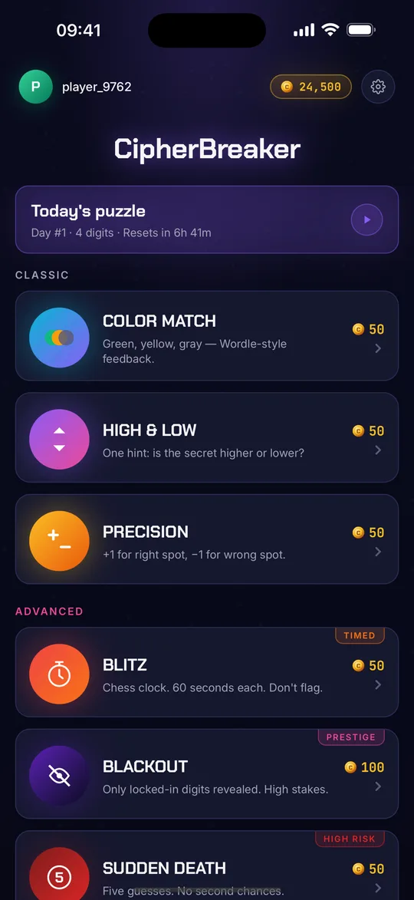
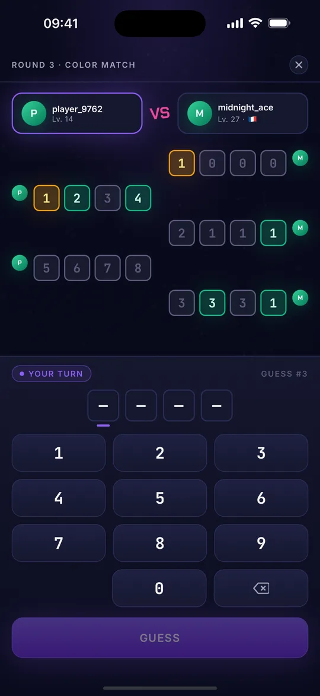
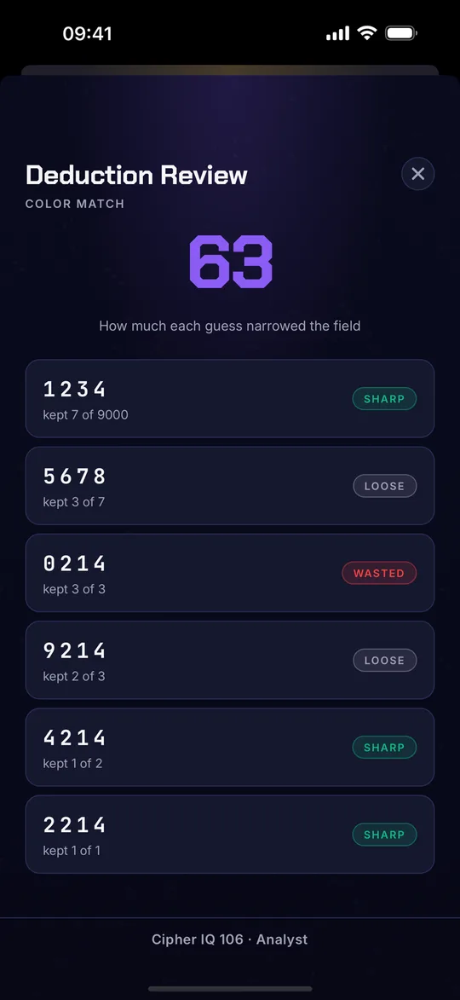
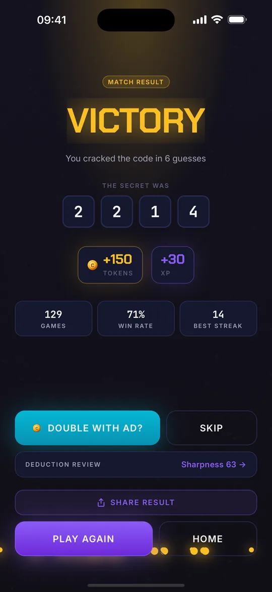

Four digits.
Ten guesses.
No luck involved.
Every code can be cracked by logic alone: read the feedback, eliminate the impossible, close in. The display runs the app's own evaluator, so the round below is the real thing.
Free · iPhone, iOS 15.1+
No account, no sign-up
Four digits are loaded.
Repeats allowed. Ten tries.
10,000 codes are possible. Deduction is how you cut them down.
HOW THE READOUT WORKS
Feedback is the whole game
Two of the classic modes report the same truth in different languages. One paints it. One counts it.
COLOR MATCH
Green sits in the right slot. Gold is the right digit in the wrong slot. Grey is not in the code.
- right slot
- wrong slot
- not in code
PRECISION
No colours. Two numbers: how many digits are exactly right, and how many are right but misplaced. Digits never repeat, so 5,040 codes are in play.
Two digits nailed. One digit present, wrong slot. One not in the code at all.
SEVEN MODES · ONE MECHANIC
The same deduction, made harder seven ways
Each mode changes what the code tells you, or what it costs to be wrong. Matches are staked in tokens — win and you take the pot.
-
COLOR MATCH
Green, yellow, gray — Wordle-style feedback.
50 tokens staked -
HIGH & LOW
One hint: is the secret higher or lower?
50 tokens staked -
PRECISION
+1 for right spot, −1 for wrong spot.
50 tokens staked -
BLITZ
Chess clock. 60 seconds each. Don't flag.
TIMED 50 tokens staked -
BLACKOUT
Only locked-in digits revealed. High stakes.
PRESTIGE 100 tokens staked -
SUDDEN DEATH
Five guesses. No second chances.
HIGH RISK 50 tokens staked -
MIRROR
Same code, different minds. First to crack wins.
50 tokens staked
THE DAILY
One puzzle a day, and a streak you will not want to break
The Daily is four digits and ten guesses. Solve it, keep the streak, and the result card you share is the reason you are reading this page.
FROM THE APP
What the deduction looks like on a phone




Find out how sharp you really are
Free, no account, and the first code is already waiting.